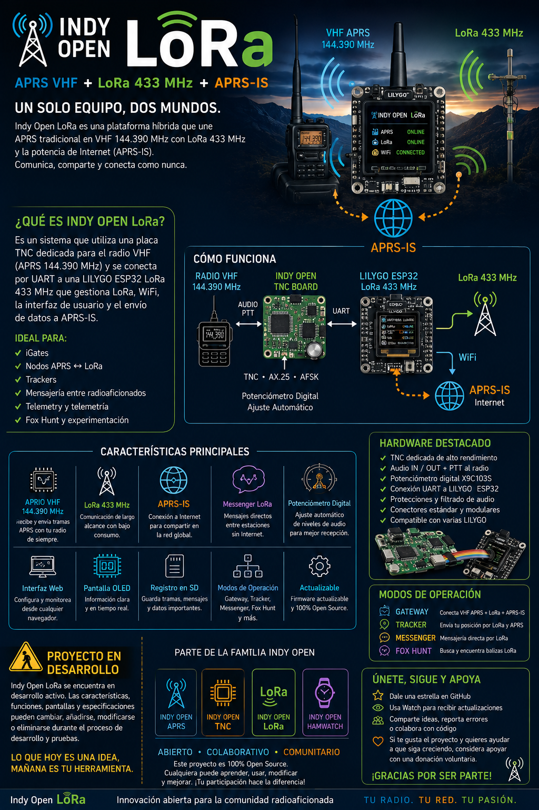

📡 Indy Open LoRa APRS iGate
APRS VHF + LoRa 433 MHz + APRS-IS

Indy Open LoRa APRS iGate es un proyecto abierto de la familia Indy Open pensado para unir dos mundos de la radioafición en un mismo sistema:
- 📻 APRS tradicional en VHF 144.390 MHz
- 📡 LoRa en 433 MHz
- 🌐 Conectividad con APRS-IS mediante Wi-Fi
La idea es desarrollar una plataforma híbrida basada en una TNC Indy Open y una placa LILYGO ESP32 LoRa, capaz de recibir, procesar, visualizar y compartir información tanto desde APRS convencional como desde nodos LoRa.
🚧 PROYECTO EN DESARROLLO
Indy Open LoRa APRS iGate se encuentra actualmente en desarrollo activo.
Las características, funciones, hardware, pantallas, modos de operación y especificaciones descritas en este repositorio representan la visión actual del proyecto.
⚠️ Las funcionalidades pueden cambiar, añadirse, modificarse o eliminarse durante el proceso de desarrollo y pruebas.
Algunas funciones mostradas en imágenes, diagramas o material promocional son conceptos previstos.
💡 La idea
Queremos crear un equipo que permita trabajar al mismo tiempo con APRS convencional y LoRa.
De forma sencilla:
Radio VHF 144.390 MHz
│
▼
PCB de Indy Open TNC
│
▼
LILYGO ESP32 LoRa
│ │
│ └──── LoRa 433 MHz
│
└────────────── APRS-IS
por Wi-FiLa TNC se encargará del mundo APRS / AX.25 en VHF, mientras que la LILYGO ESP32 gestionará LoRa 433 MHz, la conexión a Internet, la interfaz, los registros y el intercambio de información con APRS-IS.
🔧 Hardware previsto
El proyecto contempla una PCB propia que podrá integrar:
- Indy Open TNC
- Audio de entrada y salida hacia el radio
- PTT
- Conectores hacia el equipo VHF
- Potenciómetro digital para ajuste de nivel
- Conexión UART hacia la LILYGO ESP32
- Alimentación y protecciones
- Conectores modulares para facilitar pruebas y futuras versiones
La intención es que esta placa pueda utilizarse con diferentes modelos compatibles de LILYGO ESP32 LoRa, evitando depender de una sola versión de hardware.
📻 APRS VHF
La parte APRS utilizará un radio VHF convencional trabajando en 144.390 MHz, conectado a la Indy Open TNC.
📡 LoRa APRS en 433 MHz
La LILYGO añadirá el enlace de radio mediante LoRa 433 MHz.
Esto permitirá funciones como:
- Comunicación entre nodos Indy Open
- Mensajería entre radioaficionados
- Telemetría
- Trackers
- Balizas
- Información de sensores
- RSSI y SNR
- Enlaces de experimentación de largo alcance y bajo consumo
🌐 APRS-IS
El ESP32 cuente con Wi-Fi podra conectarse a APRS-IS.
Uno de los objetivos principales es que el sistema pueda actuar como puente entre:
APRS VHF
↕
Indy Open LoRa
↕
APRS-ISy también:
LoRa APRS 433 MHz
↕
Indy Open LoRa
↕
APRS-IS🚀 Modos que queremos explorar
🛰️ Gateway
Equipo fijo capaz de trabajar con:
APRS VHF + LoRa APRS 433 MHz + APRS-IS
📍 Tracker
Nodo LoRa APRS capaz de enviar posición, telemetría y otros datos.
💬 Indy Open Messenger
Mensajería directa y de APRS entre dispositivos Indy Open mediante LoRa.
🦊 Fox Hunt
Experimentación con balizas LoRa, RSSI/SNR y búsqueda de transmisores.
💬 Indy Open Messenger
Queremos desarrollar un protocolo abierto de mensajería para que distintos dispositivos de la familia Indy Open puedan comunicarse.
🖥️ Firmware y Hardware
Además del hardware la PCB, desarrollaremos un firmware específico para la LILYGO ESP32.
⭐ Sigue el proyecto
Si te interesa Indy Open LoRa:
- ⭐ Dale una Star al repositorio
- 👀 Usa Watch para recibir actualizaciones
- 🍴 Haz Fork si quieres experimentar
- 💡 Comparte ideas y sugerencias
- 🐛 Reporta errores
- 🤝 Colabora con código, pruebas o documentación
Cada aportación ayuda a que el proyecto siga creciendo.
☕ Apoya el proyecto
Indy Open es un proyecto comunitario desarrollado por interés en la radioafición, la experimentación y el hardware/software abierto.
Si quieres ayudar a continuar desarrollando placas, probando hardware y creando nuevas funciones, podrás apoyar voluntariamente el proyecto.
❤️ Las donaciones son completamente opcionales.

¡Gracias por apoyar Indy Open APRS! 73 de XE3JAC